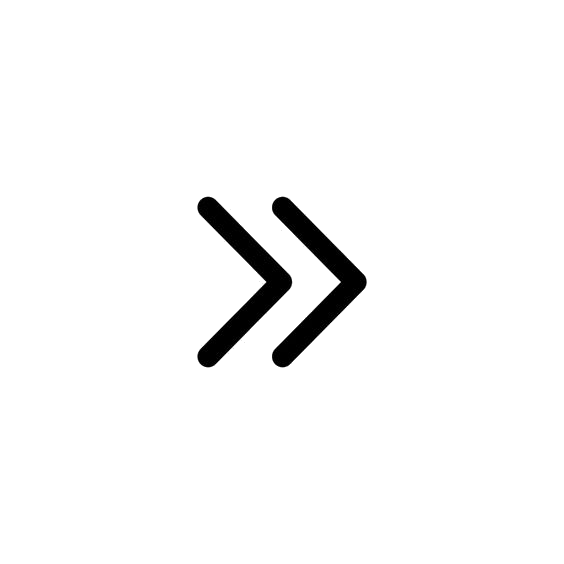

Hiába volt régen elektrotechnika óránk ezt a portfóliót nem esett nehezemre megírni. Szabadidőmben sokat foglalkozom elektrotechnikával így emlékszem minden alapra, amit tanítottak. Ez a tantárgy különösen érdekel, mert lehetővé teszi, hogy kreatív alkotásokat készítsek és közben tanuljak. Az elektrotechnika órák rendkívül érdekesek voltak, a sok alap tudnivaló mellett sok érdekességet is tanultunk. A legutolsó elektrotechnika óra óta rendkívül érdeklődöm a szakma iránt és mindenképp szeretném a jövőben hasznosítani és gyarapítani tudásomat.
Ez a projekt ötlet akkor jött mikor még úgy tudtuk, hogy mindenkinek egy nagy projektet kell készítenie hármas csoportokban. Az én csapatom egy elektronikus készüléket akart készíteni, amihez én terveztem a töltöttségi szintmérőt. Miután változott a követelmény gondoltam ez a kisebb projekt tökéletes lesz a mikrovezérlők tantárgyhoz. Rendkívül izgalmas volt ez a munka. Most először használhattam LCD kijelzőt, a mikrokontroller analóg pinjét, illetve egy potenciométert. A számolásokhoz, internetről szedtem össze mindenféle fórumokról az elméletet, melyet átalakítva alkalmazhattam saját munkámban. A mikrokontrollerek világa nagyon izgat és a jövőben is mindenképp szeretnék velük dolgozni.